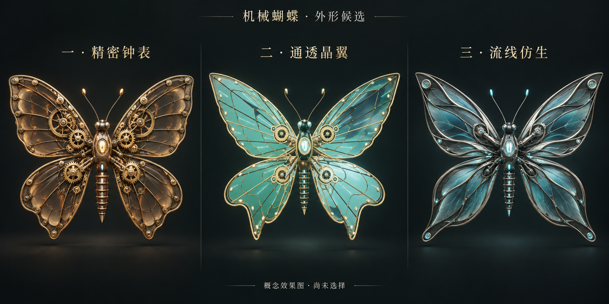

一种可复用的 AI 编程工作方式
从“许愿式生成”回到用户真正参与的创造过程
先让人看见、试玩和比较候选，再把体验中发现的条件冻结成可追溯、可重开的决策状态；下一轮生成只在这些状态允许的范围里继续。
这套方法要接起的闭环
可玩候选把未来用户会看到的效果先做成可体验的对象。
体验与判断用户通过操作、比较和感受，发现原先没有说出的条件。
结构化意图把选择、否定和待定项记录成可读、可追溯的状态。
受约束生成AI 根据已确认状态继续，而不是重新凭空猜测。
常见流程
提示词 → 预览 → 再提示词 → 版本历史。反馈常停留在一句话里，下一轮容易重新误解。
这里的流程
体验 → 判断 → 结构化意图 → 受约束的下一次生成。每次体验都把知识向前补回需求与取舍。
它不是普通的代码分支，而是可组合的决策图
传统分支通常复制一整条实现路径。这里把会影响感受的维度拆开，让用户可以分别选择，再组合成当前可玩的成品。
当前
可玩的
成品
可玩的
成品
动作
机械细节
翅面材质
微光
环境
这不会消除所有组合，但把探索从“整套版本互相排斥”变成“少数有意义的维度可随时重开”。
为什么它对 AI 实现更稳定、更可控
AI 更擅长在已有上下文上补齐和修改，而不是从空白处反复构建。可追溯状态把“我喜欢这个，但不要那个”的体验结果变成下一轮可执行的边界，减少同一误解反复出现。
用户已确认
作为优先约束保存，例如外形起点、明确选择和排除项。
AI 的实现假设
单独记录，用户可随时推翻；不能伪装成用户的决定。
尚待体验
保留为下一轮候选，避免被过早“定稿”。
机械蝶案例：体验如何反推约束
外形起点
通透晶翼、细长流线机身、少量机械结构。
体验中发现
翅膀反光过亮；光点应在蝴蝶外部且不遮挡；背景会改变对蝴蝶的感受。
进入下一轮的约束
追随外部光点、少量翅根齿轮、含蓄微光，以及可切换的晨雾花园环境。

这个案例的重点不在“做出一只蝴蝶”，而在于用户能先玩到候选，才发现原本没有能力或没有机会描述的真实条件。
尚未自动化的部分
- 本案例已把决策状态和验证证据保存到仓库，但还没有实现“提交代码时自动阻止违背已确认决策”的程序规则。
- 它也不适合每一次小修复；明确、低风险的改动不需要强行制作可玩候选。
- 可组合维度仍需要设计边界，候选过多时，体验本身会变得难以判断。
可复用资料
下面的资料把方法、状态结构和机械蝶案例保存在同一仓库中，供后续任何探索型项目重用。